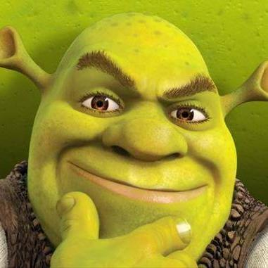

Eh. At risk of turning this into Stupid Culture War Shit, I actually don’t buy (2). I think there’s a meaningful difference between the way male heroic protagonists have traditionally been portrayed in fantasy movies versus the way female heroic protagonists have been portrayed in fantasy movies since 2010 or so [where “fantasy movies” definitely includes superhero stuff]; that this discrepancy represents an ongoing cultural problem for certain kinds of narrative, even if it’s probably fine in any given isolated case; and that Carol Danvers is a really good illustration of the issue.
I know I’m not the first person to point this out, or probably even the dozenth, but…
The Hero’s Journey is an ur-story. It works a particular way, it hits particular beats.
[ – and here we have a brief sidebar while the academic folklorist in me insists on shouting: THIS “UR-STORY” IS ONE PARTICULAR CULTURAL ARTIFACT WITH A LOT OF RESONANCE IN CERTAIN CONTEXTS, IT IS NOT MAGIC OR BIOLOGY OR SOMETHING, NOT EVERY SINGLE GODDAMN STORY IS OR SHOULD BE A REGURGITATION OF CAMPBELL – ]
One important thing is that the hero starts weak, in skill and in spirit, so that over the course of his journey we can watch him grow strong. Another important thing is that his strength-in-skill is achieved as an outgrowth of his strength-in-spirit; he learns some important lesson, he acquires discipline or compassion or courage or some other crucial virtue, and in doing so he comes into his power.
I’m not a movie expert by any means, but my impression is that this pattern plays out with really remarkable fidelity in movies about fantastic hero-figures, especially in heroic origin stories. Luke Skywalker is a whiny cowardly putz who needs to learn to trust the Force before he can be a Jedi. Peter Parker needs to learn that with great power comes great responsibility before he can be a real superhero. Tony Stark needs to learn to care about others. Bruce Wayne has a dark version where he learns the “virtue” of vengeful obsession. Aladdin needs to learn to put virtuous action ahead of his selfish desires. Simba needs to learn to face his fears rather than losing himself in hakuna-matata. Even Steve Rogers, who is in some ways kinda morally perfect from the get-go, needs to learn to stand up for what he believes in rather than allowing himself to be used as a pawn by impersonal forces.
One particular very-narrow instantiation of this pattern is “the hero learns to ignore the haters and believe in himself.” That works, kinda, as a literary Sometimes Food. It has the inherent problem that it tends to sound an awful lot like “the hero just needs to realize that he’s inherently awesome the way he is, and that he doesn’t need to learn anything or cultivate any virtue” – which sort of borks up the underlying themes, and is not a super-compelling moral from a mythic standpoint. I actually can’t think of any culturally-central examples of this particular version playing out with a [male] hero. But I’m sure they’re out there.
With heroines, these days, it’s something you see over and over and over. It’s Rey, it’s Moana, it’s Wonder Woman, and it’s certainly Captain Marvel.
And, yeah, this didn’t happen in a vacuum. Going into this particular cultural moment, there may have been a surfeit of stories about women being torn apart for their character flaws – I was around in the late ‘80s and the ‘90s, I remember all the “career bitch learns to have a heart and care about people” shit – and a dearth of distaff-side power-fantasy confidence. But right now, just as we’re finally seeing the convergence of “lots of awesome culturally-central heroic fantasy stories” and “lots of stuff being made specifically for and about women,” basically every version of the actual Hero’s Journey is being drowned under a thick layer of Yass Queen Slay.
As I understand it, the proper way to round out a rant like this is to make an appeal about The Children. So, sure. The little girls for whom these films are being made, the ones who for the first time are supposed to be learning to see themselves as true heroes, are being fed a mythic diet consisting of nothing but spun sugar. This is neither appetizing, in anything more than the very shortest term, nor beneficial.
One particular very-narrow instantiation of this pattern is “the hero learns to ignore the haters and believe in himself.” That works, kinda, as a literary Sometimes Food. It has the inherent problem that it tends to sound an awful lot like “the hero just needs to realize that he’s inherently awesome the way he is, and that he doesn’t need to learn anything or cultivate any virtue” – which sort of borks up the underlying themes, and is not a super-compelling moral from a mythic standpoint. I actually can’t think of any culturally-central examples of this particular version playing out with a [male] hero.
Hmmm, let’s think…

Other examples include Batman, Superman, Judge Dredd, or Sherlock Holmes.
I’m not sure all your examples up there are actually the same thing. Luke Skywalker doesn’t simply change throughout the movies, we watch him acquire a certain set of Rebel and Jedi skills. He starts at the beginning of Star Wars as a farm boy with no experience in fighting, organizing people, using Jedi powers, swinging a lightsaber, etc, and he slowly acquires and improves those skills throughout the three movies.
We don’t watch Tony Stark start out as a mediocre inventor and then slowly work his way to being a great one at the end of Iron Man 3; He’s already a super confident genius at the beginning of the film. We never see batman go through the “try to stop the bad guy while wearing hockey pads” stage of his career; we see a moment of vulnerability as a child and then immediately cut to him when he’s Batman. Even in Batman Begins he’s 90% of the way there when he goes to see Ras Al Ghul at the beginning of the movie. By the beginning of The Dark Knight The Joker is the underdog.
I don’t think I have ever seen an adaptation of Sherlock Holmes that went, “But what was he like when he was a clumsy beginner detective who made a lot of detecting mistakes?”
These characters have to grow, in some sense, but because they either face an obstacle which itself is so immense that even their own great skill is stymied (e.g. Batman might be a superhero, but can even he beat a genius criminal like The Joker? Can the great Sherlock Holmes beat the Napoleon of Crime?) or because they face a problem which is outside their skill set. (Superman can crush coal into diamonds with his bare hands but boy that Lois Lane sure is a handful!)
So the first thing worth saying here is that not all these stories are Hero’s Journey reiterations even in the broadest and most generous sense. Sherlock Holmes definitely isn’t; he is not the Hero With a Thousand Faces, that’s not what he’s about and never has been; and that’s fine. His stories aren’t even about his development as a character at all. I’m pretty sure the same goes for Judge Dredd, although I confess that I’m not really familiar with him as an actual character rather than a meme.
Beyond that…this is an overly-narrow reading of the “coming into your power” concept. It’s true that Iron Man’s literal “power” is “being really smart and good with technology,” and he is that thing from the very beginning, but…the Iron Man origin story definitely starts with “Tony Stark is a man who can’t really deal with his problems,” ends with “Tony Stark is an effective hero,” and the narrative sets things up such that getting from A to B involves learning an important moral lesson. The whole point of the [since-1980-or-so] interpretation of Batman is that we go directly from “criminals are a cowardly and superstitious lot, I shall become a bat” to terrifyingly effective crime-fighting; Bruce underwent a spiritual development in the vein of “I will sacrifice my humanity to be an avatar of fearful justice and avenge my parents,” and it worked, like black magic. We tend to skip over the training sequences with him precisely because they don’t underlie the moral narrative.
I’m not sure whether you can really call Shrek an instantiation of the Hero With a Thousand Faces, but to the extent that you can, he sure does need to learn important moral lessons about friendship and teamwork and love before he can be effectively heroic.
Superman is a super-weird edge case in a variety of ways.